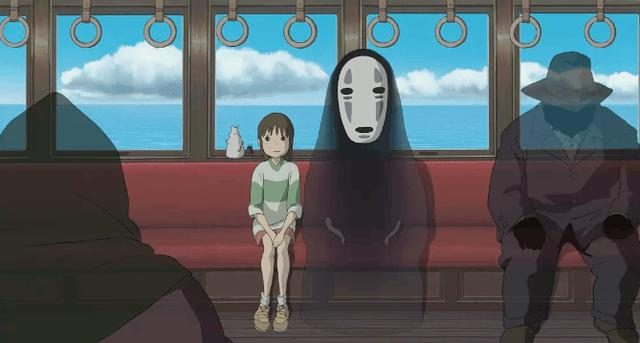

不是所有电影都叫《千与千寻》, 六处隐喻带你领略它的伟大

如果非要在宫崎骏的作品中排序，我会毫不犹豫的将《千与千寻》放在第一，并不是因为该作赢得了第75届奥斯卡最佳动画长片金像奖，事实上来自美国电影界的评论并不代表着东亚大众的审美；也不是因为它成就了宫崎骏成为日本在世最伟大的编剧和导演，因为如果从完成度以及创意性上来说，宫崎骏早期的作品更具代表性。但要说到主旨寓意以及细节深刻程度，《千与千寻》成为第一当之无愧，而这也正是目前电影佳作的最重要标签。
《千与千寻》所讲述的故事并不复杂，甚至有点松散。在误入神隐之地看到父母不顾礼仪的吃陌生食物而变成猪后，千寻努力的想要让他们回归正常并回到现实世界。整部电影的冒险故事都是围绕千寻的这一目的而展开。
在影片中，穿插着多个故事线，比如白龙、双胞胎女巫、无脸男、腐烂的河神甚至是巨大的孩童，每个人物都有着自己的故事。而这些故事线以及影片类似百鬼夜行中林林总总的怪异角色最终都揭示着一个主题：如何融入不同的世界以及坚持寻找自我。
影片中几乎每个细节都有着深刻的寓意，或批判现实或揭露人性，今天我们就和大家说说其中的六处隐喻。
1、贪婪的父母
正如影片开头介绍，关于神隐之地的潜规则就是只要接受了不属于自己的东西就会失去自我，千寻的父母在无人照看的饭店前大快朵颐，并无视千寻的阻拦，最终成为了猪。而猪这一形象也直接点明了人类的贪婪与自大。类似的贪婪和惰性在无脸男变出金子引得店内所有人哄抢与千寻坚决拒绝得到了进一步对比。
2、微笑面对
就像宫崎骏电影的所有女主角一样，千寻也拥有着善良、乐观、勇敢等优秀品质。但最难能可贵的是她在异世界也能时刻保持微笑，为打扰别人而道歉，为帮助别人而欣喜。这种性格特征表现在影片多个细节中，例如帮助腐烂的河神清理垃圾，救助白龙，将神符还给钱婆婆，这其实正是人性的伟大，却贯穿影片始终，直至最后就出父母和帮助白龙恢复真身。
3、腐烂的河神

臭气熏天的客人收到了所有人的嫌弃，被指定为给他洗澡的千寻用高级水帮助它恢复了清洁，并从它的身上冲洗出了大量垃圾。而河神正暗示着现实中的水污染和环境污染，因为人类的无节制而充斥着大量垃圾，宫崎骏借此呼吁人们保护环境。
4、新生与身份认同
当千寻在电梯中第二次看到白龙以及听到他冷冰冰的语气时，她曾问过别人这里是不是有两个白龙。其实白龙只有一个，也知道和千寻儿时就认识，只是他迷失了自我。当影片最后千寻终于想起了家乡那条河的名字，白龙终于摆脱诅咒，重获新生，影片关于身份认同的主题展露无遗。
5、独自旅行与勇气
千寻带着无脸男，以及小白鼠和苍蝇，搭上了去往钱婆婆家的鬼魅电车，电车上尽是浮影鬼魅，但千寻却目光坚定，甚至好奇的看向远方，这一幕被无数人截成壁纸，每每看之都让人心生怜爱。旅途的时光以及在钱婆婆家收获的温暖，让千寻的勇气不断壮大。而声称在外面容易生病的孩童，在变成小白鼠后对路途有着特别的痴迷，这是关于年轻人的暗示，成长就是不断经历。……（笑）但是在日本不会。
6、不要忘记你是谁，从哪里来
在神隐世界中，忘记自己的名字就会被奴役，直至消失。白龙不断的提醒千寻这一规则，自己却忘了自己的名字。而千寻一直记得的就是带着父母回家，她不断的提醒自己名字以及寻找父母，最终她救赎了白龙，帮助了神隐世界的人们，走过了漆黑的隧道，踏上了归途。影片主旨的设定最终得到了升华。当千寻回过头，她会感激这次奇遇，不仅因为她的经历，更是她对自己的认知。